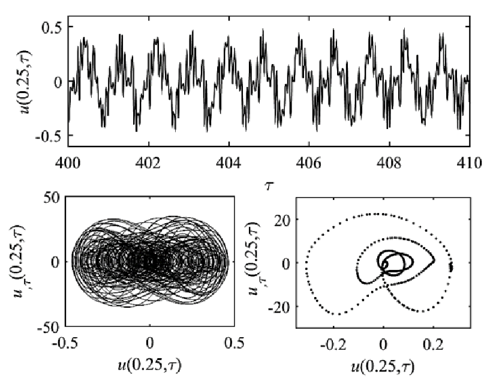

Stability and bifurcation analysis of a beam-mass-spring-damper system under primary and one-to-three internal resonances
Modares Mechanical Engineering (in Persian, National Journal), 17(2), pp.166-176, 2015. Journal Article

Abstract
In this paper nonlinear modal interactions and stability of a Rayleigh beam carrying a mass-springdamper system are investigated. For this purpose, the dimensionless equations governing the vibration of the system are analyzed based on multiple scales method. By considering viscoelastic Kelvin-Voigt damping in the beam, complex mode shapes and time-dependent resonance frequencies are extracted. Using the traditional form of the multiple scales method results in physical contradiction in the time response of the concentrated mass, which should be resolved. After free vibration analysis, the forced response of the system under harmonic force with frequency close to the first natural frequency and occurrence of one-to-three internal resonance is studied. The parameters of the one degree of freedom system are considered in a way that the modal interaction occurs via internal resonance mechanism. In this condition, frequency response of the system and its stability are investigated and it is shown that the instability associated with the jump and Hopf bifurcation occurs in the vibration amplitude. Plots of the time response, phase and Poincare show that periodic, quasi-periodic and chaotic vibration may take place in the system. In order to verify the present paper’s results, the natural frequencies of the system are compared to those of the previous studies; in addition to this comparison, the frequency response based on numerical integration validates the results of the present paper.